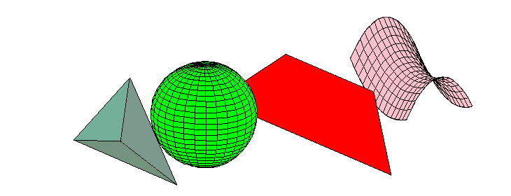

| Some Motivation. Not an application! |
|
2 |
This problem of transversal tangents arose in several contexts.
Here is one.
Suppose that you are viewing a room populated by geometric objects.
(Here, polytopes, spheres, polygons, and quadrics.)
